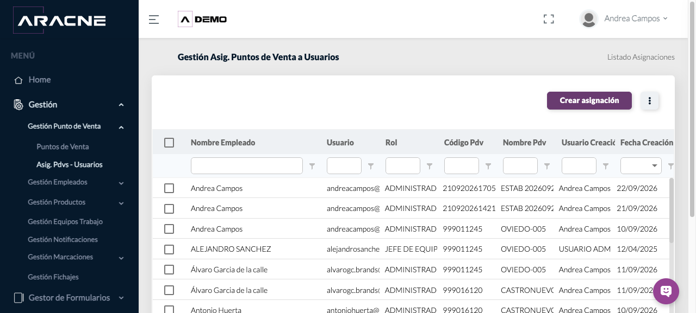
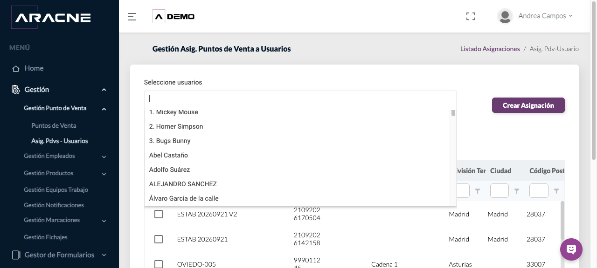
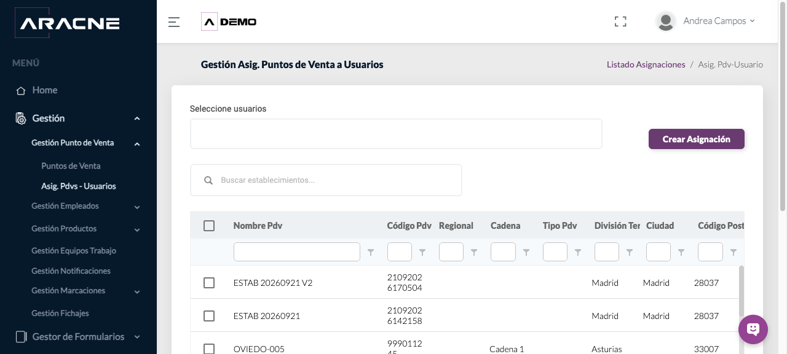
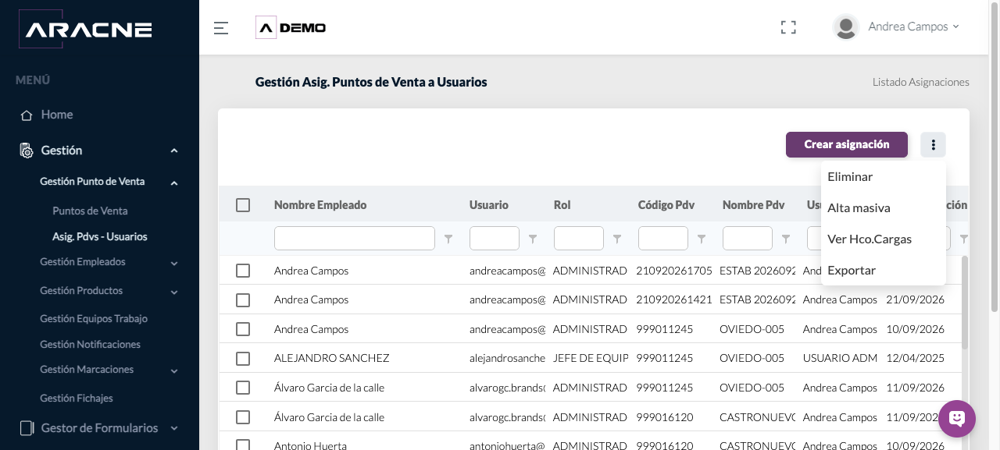
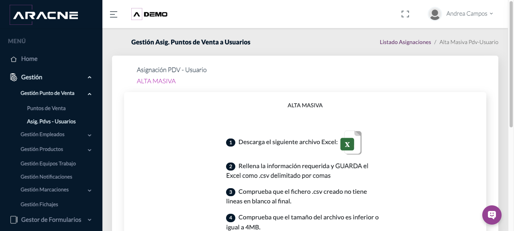
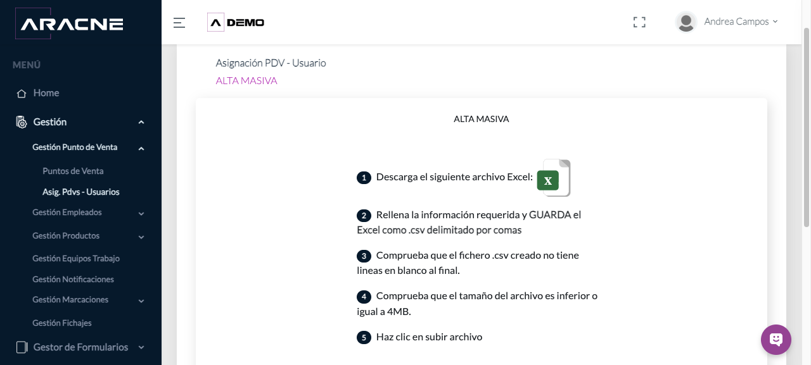
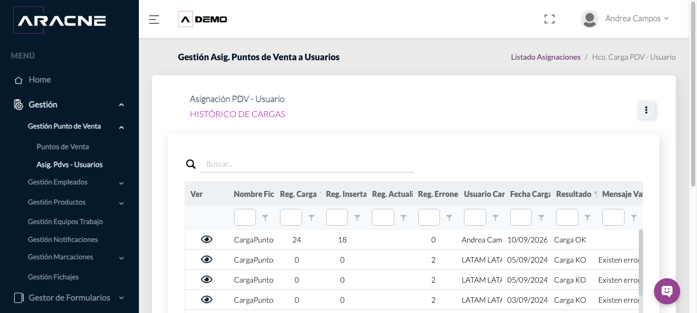
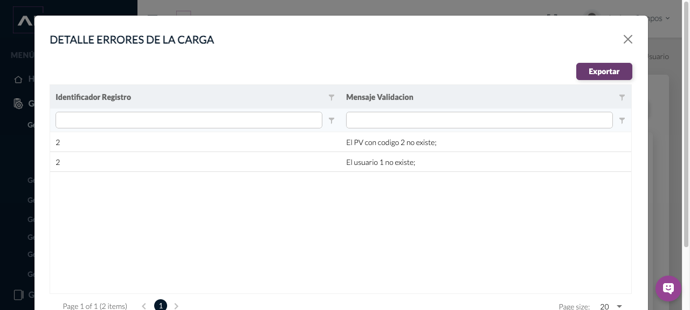
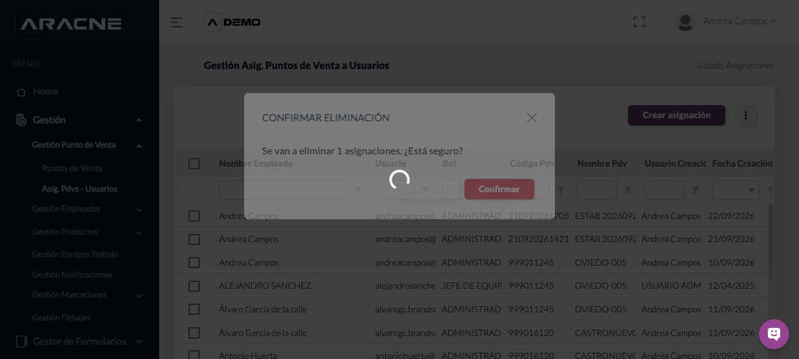
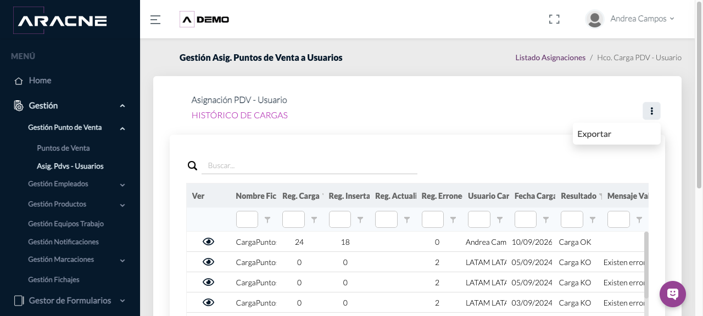

Asignación PDV–usuarios
Relacionar uno o varios usuarios con los establecimientos en los que deben trabajar, individualmente o mediante una carga masiva.
El empleado y el Punto de Venta deben existir en la campaña. Para una carga masiva, utiliza la plantilla oficial y prepara un CSV delimitado por comas, sin líneas vacías al final y de hasta 4 MB.
Dónde estáGestión › Gestión Punto de Venta › Asig. Pdvs - Usuarios.
Consultar las asignaciones
- Abre el módulo y utiliza los filtros para buscar por nombre del empleado, usuario, rol, código o nombre del PDV, usuario de creación o fecha.

Paso 1. Listado con filtros por empleado, usuario, rol, PDV y creación.
Crear una asignación
- Pulsa Crear asignación sobre el listado.
Paso 1. Botón Crear asignación situado sobre el listado. - Abre Seleccione usuarios y busca o selecciona la persona que recibirá los establecimientos.

Paso 2. Lista desplegable de usuarios disponibles para la asignación. - Localiza los establecimientos con el buscador general o con los filtros de Nombre PDV, Código PDV, Regional, Cadena, Tipo PDV, División Territorial, Ciudad y Código Postal.

Paso 3. Formulario con buscador y filtros del listado de PDV. - Marca la casilla de cada establecimiento que corresponda al usuario seleccionado.
Paso 4. Casillas de selección disponibles en cada fila del listado. - Revisa la selección y pulsa Crear Asignación.
Paso 5. Control que completa la relación seleccionada. - Regresa al listado y filtra por usuario o código de PDV para comprobar que aparece una fila por cada relación creada.
Paso 6. Listado donde se consultan las relaciones usuario–PDV.
Alta masiva
Descargar CargaPuntosDeVentaUsuarios.xlsx.
- Abre el menú de acciones y selecciona Alta masiva.

Paso 1. Menú completo con la opción Alta masiva. - Descarga la plantilla oficial desde el icono Excel.

Paso 2. Pantalla de alta masiva con el icono de descarga. - Completa las columnas codigoPdv y usuario. Utiliza códigos de establecimientos y usuarios existentes en la campaña.
Paso 3. Instrucciones mostradas antes de preparar el archivo. - Guarda la información como CSV delimitado por comas, elimina cualquier línea vacía del final y comprueba que el archivo no supera 4 MB. La carga no distingue mayúsculas de minúsculas.
Paso 4. Formato, tamaño y tratamiento de mayúsculas indicados por la herramienta. - Pulsa Subir Archivo y selecciona el CSV preparado.

Paso 5. Control Subir Archivo al final de las instrucciones. - Abre Ver Hco.Cargas y revisa los registros cargados, insertados, actualizados y erróneos, además del resultado y el mensaje de validación.

Paso 6. Recuentos y resultado de cada carga masiva. - En una carga con resultado Carga KO, pulsa el icono del ojo en la columna Ver. Corrige el identificador y el mensaje indicados antes de repetir la carga.

Paso 7. Detalle con el identificador del registro y su mensaje de validación.
Menú de acciones
- Pulsa el botón de tres puntos. El menú contiene Eliminar, Alta masiva, Ver Hco.Cargas y Exportar.
Paso 1. Todas las acciones disponibles en el listado. - Para exportar el listado, selecciona Exportar. Se descarga un Excel cuyo nombre comienza por ListadoAsignacionesPuntosDeVentaUsuarios e incorpora la fecha y hora.
Paso 2. Opción Exportar dentro del menú principal. - Comprueba que el Excel contiene Nombre Empleado, Usuario, Rol, Código Pdv, Nombre Pdv, Usuario Creación y Fecha Creación.
Paso 3. Columnas visibles que también componen la exportación. - Para retirar relaciones, marca las filas y selecciona Eliminar. Si no seleccionas ninguna, la herramienta avisa de que es necesario elegir al menos una asignación.
Paso 4. Opción Eliminar y casillas de selección del listado. - En CONFIRMAR ELIMINACIÓN, revisa el número de asignaciones. Pulsa Confirmar solo si deseas retirarlas; utiliza la X o Cancelar para conservarlas.

Paso 5. Diálogo con el número de relaciones seleccionadas antes de eliminarlas.
Histórico y exportaciones de carga
- Selecciona Ver Hco.Cargas en el menú principal.
Paso 1. Opción Ver Hco.Cargas del menú principal. - Consulta Nombre Fichero, registros de carga, insertados, actualizados y erróneos, usuario y fecha de carga, resultado y mensaje de validación.
Paso 2. Información disponible para comprobar cada importación. - Abre el menú de tres puntos del histórico y pulsa Exportar. Se descarga HcoCargaPuntosDeVentaUsuarios.xlsx con las mismas columnas del listado.

Paso 3. Menú del histórico con la acción Exportar. - Para una carga KO, abre el ojo de Ver. En el detalle, Exportar genera HcoDetalleCargaAsignacionPdvUsuario.xlsx con Identificador Registro y Mensaje Validación.
Paso 4. Detalle de errores con su propia acción Exportar.
Campos y controles principales
- Nombre Empleado y Usuario: identifican a la persona asignada.
- Rol: función del usuario en la campaña.
- Código Pdv y Nombre Pdv: identifican el establecimiento asociado.
- Usuario y Fecha Creación: muestran quién creó la relación y cuándo.
- Reg. Carga, Insertados, Actualizados y Erróneos: resumen el resultado de una importación.
Resultado esperado y comprobación
Cada relación válida queda disponible como una fila del listado y puede consultarse por usuario o establecimiento.
En una carga masiva, comprueba que el histórico muestre Carga OK y revisa los recuentos. Si aparece Carga KO, abre el detalle antes de corregir y repetir el archivo.
Problemas habituales
- Si el empleado no aparece en el selector, comprueba que exista y esté disponible en la campaña.
- Si el PDV no aparece, revisa su alta y utiliza los filtros por código o nombre.
- Si al eliminar aparece «Es necesario seleccionar al menos una asignación», marca primero una o varias filas.
- Si el detalle indica que el PV o el usuario no existe, corrige codigoPdv o usuario en el CSV.
- Si el archivo no se admite, comprueba el formato CSV delimitado por comas, las líneas vacías finales y el límite de 4 MB.
Asignación unitaria y masiva de PDV a usuarios. Abrir la sección correspondiente de la videoteca.